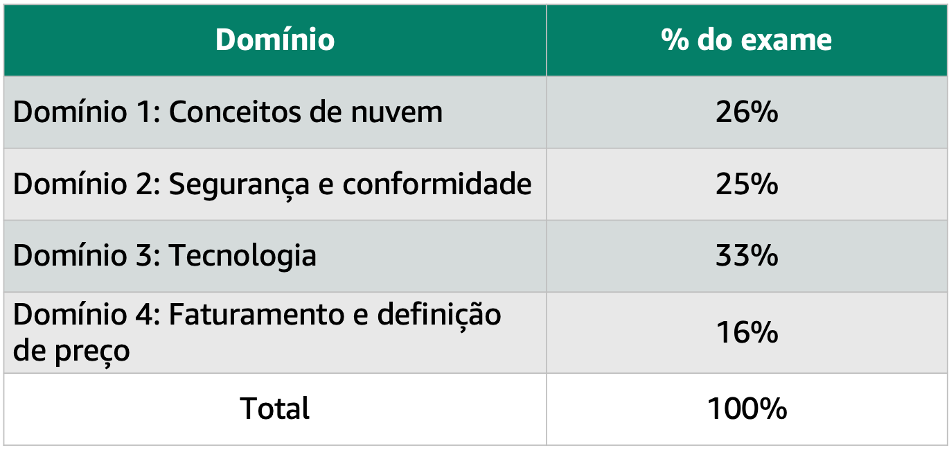

Visão geral do exame
| Nível | Associate |
| Duração | 130 minutos para concluir o exame |
| Custo | 150 USD |
| Formato | 65 perguntas de múltipla escolha ou com várias respostas |
Consulte Preço do exame para obter informações adicionais sobre o custo de outros exames de certificação.
Informação adicional:
-
A pontuação mínima de aprovação é 720 (a pontuação máxima é 1000).
-
O exame está disponível em inglês, espanhol, português, entre outros idiomas.
-
As certificações da AWS são válidas por 3 anos. Consulte para mais detalhes: Recertificação AWS.
-
Uma extensão de 30 minutos está disponível mediante solicitação para falantes não nativos de inglês fazendo o exame em inglês antes de agendar o exame. Se você fizer um exame em inglês, poderá solicitar uma extensão de 30 minutos se não for um falante nativo de inglês. A adequação do “ESL 30” só precisa ser solicitada uma vez antes da inscrição para o exame. Ele se aplicará a todos os registros futuros com todos os provedores de avaliação. Para solicitar este adequação, siga estes passos:
-
Inicia a sessão em AWS Certification
-
Selecione Go to your Account.
-
Selecione Solicitar adaptações para o exame (Request Exam Accommodations) em seguida Solicitar acomodação (Request Accommodation).
-
No menu suspeson Selecionar adaptação (Accommodation Type), selecione ESL +30 MINUTOS (ESL +30 MINUTES).
-
Selecione Criar.
-
O exame AWS Certified Solution Architect inclui quatro domínios
Os domínios cobertos descrevem cada aspecto do guia do exame de certificação AWS Certified Solution Architect. Para uma descrição de cada área, consulte o site da AWS Certified Cloud Practitioner.
Cada domínio do exame será ponderado. O peso representa a porcentagem de questões do exame que se enquadram nesse domínio específico. Essas são aproximações, portanto, suas perguntas do teste podem não corresponder exatamente a essas porcentagens. No exame, a área associada a uma questão não é indicada. De fato, é possível que algumas questões correspondam a diversas áreas.
Informações úteis e políticas relevantes para os candidatos antes de agendar qualquer exame da AWS Certification Consulte antes do teste.